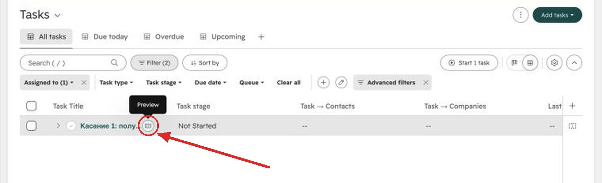
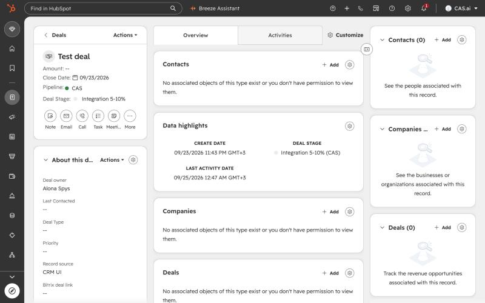
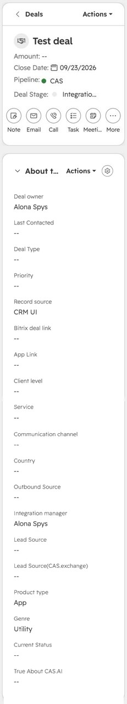
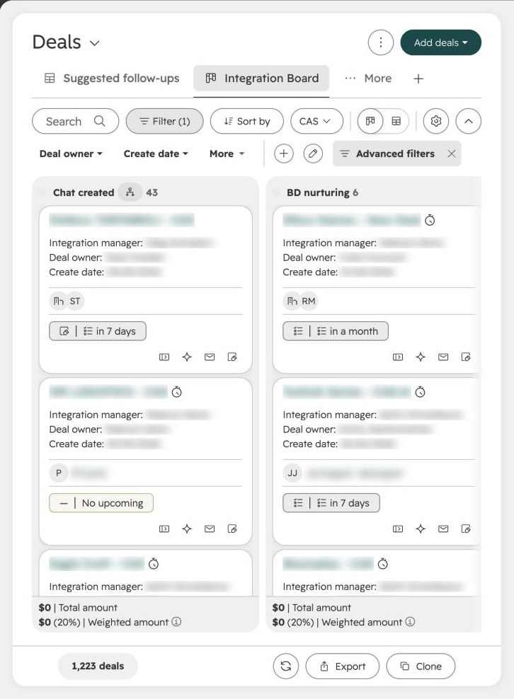
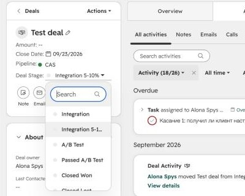
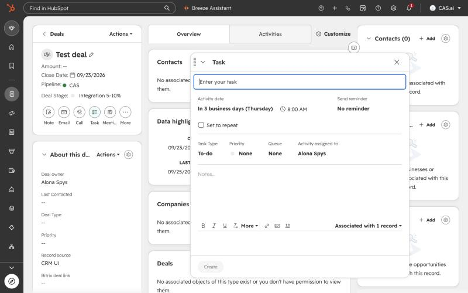
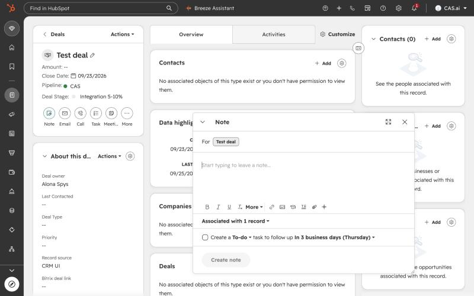
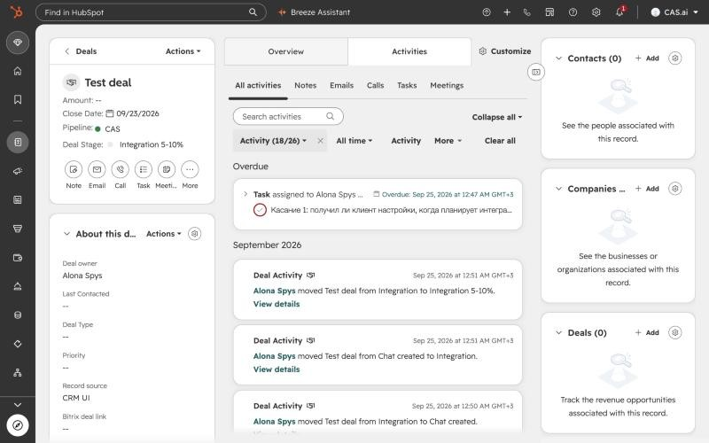

Нажмите на стадию — увидите, что она значит, какой у неё срок, что нужно заполнить и какие задачи и сообщения пришлёт HubSpot.
CRM → Tasks, вкладки Due today и Overdue.
Наведите на задачу и нажмите Preview — иконку справа от названия. Откроется задача вместе с карточкой сделки.
У каждой открытой сделки должна быть задача с датой.

Все сроки и дни на этой странице — рабочие (бизнес-дни, пн–пт). Выходные не считаются. Исключения помечены отдельно.
Открыть доску сделок в HubSpot ↗
Если у сделки 2 рабочих дня нет ни одной задачи, вам придёт напоминание в Slack.
Вышел срок стадии в рабочих днях — сообщение вам. Прошло вдвое больше — сообщение Антону.
Если сделка сидит на стадии дольше срока в рабочих днях, оставьте комментарий с причиной.
Оно совпадает с названием чата, по нему клиента заводят в 1С.
Там биздев. Ваше имя стоит в поле Integration manager.
Сделка без контакта ломает отчёт по конверсии.
Все поля — в блоке About this deal слева. Большую часть заполняет биздев, ваша задача — проверить их и вести стадию.
Заполняет биздев. обяз. — без этих полей HubSpot не создаст сделку.
Нашли пустое поле или ошибку — напишите биздеву. Какая медиация стояла у клиента до CAS — в блоке Contacts, колонка Current mediation.
HubSpot сам откроет окно с обязательным полем, когда вы меняете стадию. Не заполните — сделка не перейдёт.


| Причина в списке | Когда выбирать |
|---|---|
| Клиент перестал выходить на связь | Не отвечает в чате, и попытки связаться ничего не дали. |
| Остался у конкурента | Выбрал другую медиацию или паблишера. |
| Не подошёл формат сотрудничества | Не устроили условия: комиссия, договор, модель работы. |
| Не прошли тест, плохие метрики | Тест показал результат хуже, чем у текущего решения клиента. |
| Подозрение на фрод или ферму | Трафик или поведение приложения выглядят подозрительно. |
| Технические проблемы интеграции | Интеграция не взлетела из-за SDK, крашей или ограничений платформы. |
| Приложение снято с маркета или забанено | Приложения больше нет в сторе. |
Причину в поле всё равно дополните комментарием: поле нужно для отчётов, комментарий — для истории.
Автоматически, с 1 октября 2026.
Распределение случайное: у каждого шанс 20%, за месяц нагрузка выравнивается. Если перекос, Антон переназначит вручную.
| Сообщение | Кому | Что сделать |
|---|---|---|
| «Вам назначена новая сделка в воронке CAS…» | вам | Откройте карточку, проверьте чат с клиентом, поставьте первую задачу. |
| «У открытой сделки два рабочих дня нет ни одной задачи с датой…» | вам | Поставьте задачу со следующим шагом или закройте сделку. |
| «Срок на стадии истёк…» | вам | Переведите сделку дальше или напишите комментарий, почему задержка. |
| «Эскалация: сделка стоит на стадии вдвое дольше норматива…» | Антону и вам | Антон подключится. Заранее оставьте комментарий с причиной. |
| «A/B Test идёт 40 рабочих дней, итогов и решения клиента нет…» | Антону | Подведите итоги теста с клиентом до 45-го рабочего дня. |
| «По клиенту в Closed Won 45 дней нет ни одного комментария…» | Антону и вам | Оставьте комментарий: выручка, риски, планы. |
На доске.

В карточке.


Удобно: внизу окна заметки есть галочка Create a To-do task to follow up — поставьте её, и следующая задача создастся сразу вместе с заметкой.

